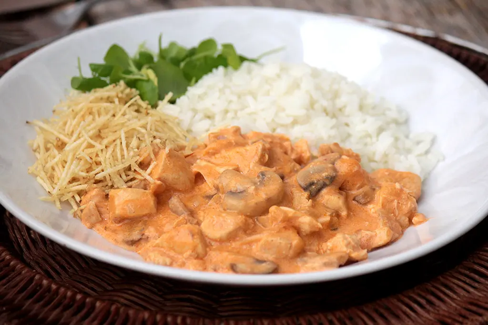

Estrogonofe de Frango Clássico
Um prato cremoso e reconfortante, com frango macio, cogumelos e o molho na medida certa. O almoço ou jantar perfeito para toda a família.
Detalhes
- Preparo: 15 minutos
- Cozimento: 20 minutos
- Rendimento: 4 porções
- Nível: Fácil
Ingredientes
Para o Estrogonofe:
- 500g de peito de frango cortado em cubos
- 1 colher (sopa) de manteiga
- 1/2 cebola média picada
- 2 dentes de alho picados
- 1/2 xícara (chá) de champignon fatiado
- 1/2 xícara (chá) de catchup
- 1 colher (sopa) de mostarda
- 1/4 xícara (chá) de conhaque ou vinho branco seco (opcional, para flambar)
- 1 lata (300g) de creme de leite (sem soro)
- Sal e pimenta do reino a gosto
Para Servir:
- Arroz branco
- Batata palha
Modo de Preparo
Preparando o Frango:
- Em uma panela grande ou frigideira, derreta a manteiga e doure os cubos de frango temperados com sal e pimenta. Retire o frango e reserve.
- Na mesma panela, refogue a cebola e o alho até ficarem transparentes.
- Passo Opcional (Flambar):* Adicione o conhaque (ou vinho), incline a panela em direção à chama para flambar (com muito cuidado!) ou deixe evaporar naturalmente por 1 minuto.
Finalizando o Molho:
- Adicione o frango de volta à panela. Junte o catchup, a mostarda e os champignons. Misture bem.
- Cozinhe em fogo baixo por cerca de 5 minutos, para apurar o sabor.
- Desligue o fogo e adicione o creme de leite, mexendo delicadamente para incorporar. Não deixe ferver após adicionar o creme de leite, para não talhar.
- Prove e ajuste o sal e a pimenta, se necessário.
- Sirva imediatamente com arroz branco e batata palha.
Dicas do Chef
- Textura: Para um molho mais encorpado, use requeijão cremoso junto com o creme de leite.
- Carne: A receita também funciona perfeitamente com filé mignon ou alcatra cortados em tiras finas.
- Acidez: Adicionar algumas gotas de limão no final realça o sabor e equilibra a cremosidade do prato.